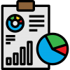
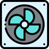

Camaron

Overview
The CAMARON device monitors and maintains an aquaculture pond in optimum conditions and gives real-time data through a mobile application using the IoT platform.
Pricing
Version 1
₹.49000/-
Specifications
- pH Sensor
- DO – Dissolved Oxygen
- Temperature Sensor
- Extra sensor Slot
- Electrically Isolated Sensors
- Mobile application – Camaron App
- Data visualization
- Add ons:
- Ammonia sensor
- Electrical Conductivity Sensor
- Automatic Aerator control
- Feeder Automation
Version 1
₹.54000/-
Specifications
- pH Sensor
- DO – Dissolved Oxygen
- Temperature Sensor
- Extra sensor Slot
- Electrically Isolated Sensors
- Mobile application – Camaron App
- Data visualization
- Add ons:
- Ammonia sensor
- Electrical Conductivity Sensor
- Automatic Aerator control
- Feeder Automation
Product Features
In-App sensor Tracking
With the app, the farmer can track Shrimp health with PH, DO, temperature and ammonia value of water with just a click reducing the hassle of laboratory testing.

Data Analytics & Reports
Key metrics and data analytics are provided based on which farmers can optimize their operations and manage their shrimp production better.
Process Monitoring
Monitor and control all your manufacturing processes (including feed management) with global analytics, alerts, and reports.
Quality Inspections
Automate quality inspections with a machine vision solution designed to scale with your business.
Real-Time tracking
Through the dashboard, the Farmers can track their water quality, shrimp health and monitor shrimp feed management system in real-time.
